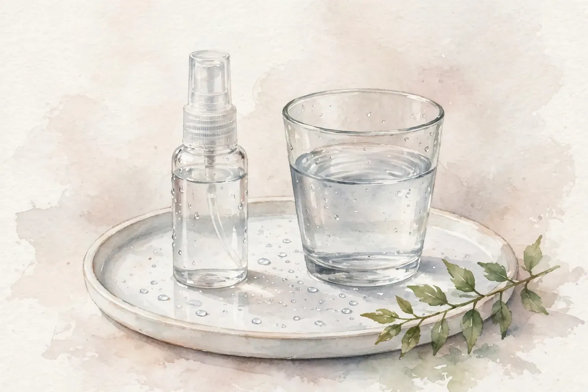

トップ ＞ スキンケア ＞ ミスト化粧水の使い方：距離と回数、重ね方の目安
ミスト化粧水の使い方：距離と回数、重ね方の目安

施術のあと、お客様から「ミスト化粧水って、どうやって使うのがいいんですか」と聞かれることがあります。顔にシュッと吹きかけるだけの、簡単なアイテムに見えますが、距離や回数、重ね方で使い心地はけっこう変わります。この記事では、特定の商品の話ではなく、ミスト化粧水の使い方の目安と、パッケージ表示の読み方を整理します。
まず押さえる、ミスト化粧水の役割
ミスト化粧水は、細かい霧状にして肌にのせるタイプの化粧水です。手でつける化粧水と大きく違うのは、顔全体に広く、薄くのせやすい点です。手が届きにくいところや、髪の生え際の近くにも、霧として届きます。外出先や職場で使う人も多く、持ち運びしやすい小さな容器のものもあります。
ただし、ミストはあくまで化粧水のひとつの形です。吹きかけたあと、そのままにしておくと、水分が蒸発するときに肌の表面の水分も一緒に持っていかれる感じがすることがあります。私の現場での考え方は、吹きかけたあとは手のひらで軽く押さえてなじませる、という一手間を入れることです。押さえることで、肌の上に残った水分が手に移らず、なじんだ感じがします。押さえるときは、こすらずに、顔全体を包むように両手を当てるのが基本です。
距離と回数、重ね方の目安
ミストを吹きかけるときの距離は、パッケージに「顔から20センチほど離して」といった案内が書かれていることがあります。近すぎると、霧が一点に集中して、肌が濡れた感じになります。遠すぎると、霧が途中で散って、届く量が少なくなります。表示に距離が書かれていれば、まずその数字を目安にしてください。書かれていない場合は、手を広げたときのひじから手首くらいの距離を目安に、顔全体をひと回りするように吹きかけます。
回数は、1回で顔全体が軽く湿る程度が目安です。足りないと感じたら、もう1回重ねます。重ねるときは、前の霧がなじんでから次を吹きかけるのが、私のやり方です。一度に何度も吹きかけると、肌の上で水滴がたれて、首元まで流れてしまうことがあります。回数を重ねるほど、肌がしっとりするわけではなく、なじませる手間も増えるので、2〜3回を目安にすると、流れが短くまとまります。目を閉じて、口を軽く閉じて吹きかけるのも、忘れずに覚えておきたい点です。
使うタイミングと、表示で見るポイント
ミスト化粧水を使うタイミングは、朝の支度のときや、化粧水の前のプレケアとして使う人もいれば、日中の乾燥が気になるときに使う人もいます。使う順番は、パッケージの案内に従うのが基本です。「化粧水の前に」「化粧水のあとに」など、順番が書かれているものもあります。ほかのアイテムと組み合わせるときは、表示の順番を優先してください。
表示で見るポイントは、内容量と、1回あたりの使う量の案内です。小さな容器のものは、1日に何度も使うと、思ったより早くなくなります。持ち運び用と自宅用で容器を分けている人もいます。また、スプレー部分の構造によって、霧の細かさが違います。細かい霧のものは広がりやすく、粗い霧のものは一点に届きやすい傾向があります。店頭で試せるときは、手の甲に一度吹きかけて、霧の広がり方を確認するのが確実です。
スプレー部分の手入れも、忘れずに確認しておきます。ミストの出口が詰まると、霧がまっすぐ出なくなったり、液がたれてきたりします。詰まりを感じたら、スプレーの先をぬるま湯で軽く洗い、よく乾かしてから使います。出口を針のようなものでつつくのは、部品を傷めることがあるので避けてください。容器を倒したまま置くと、液が漏れることがあるので、立てて置くのが基本です。
ミスト化粧水は、手軽さが魅力のアイテムです。だからこそ、距離と回数、重ね方という基本を押さえておくと、毎日の使い方が安定します。表示に書かれている距離や順番を、まず一度読んでみてください。
セラフィナ「ミストは距離と回数が大事なんだね。近すぎず、遠すぎず、顔をひと回りする感じで」